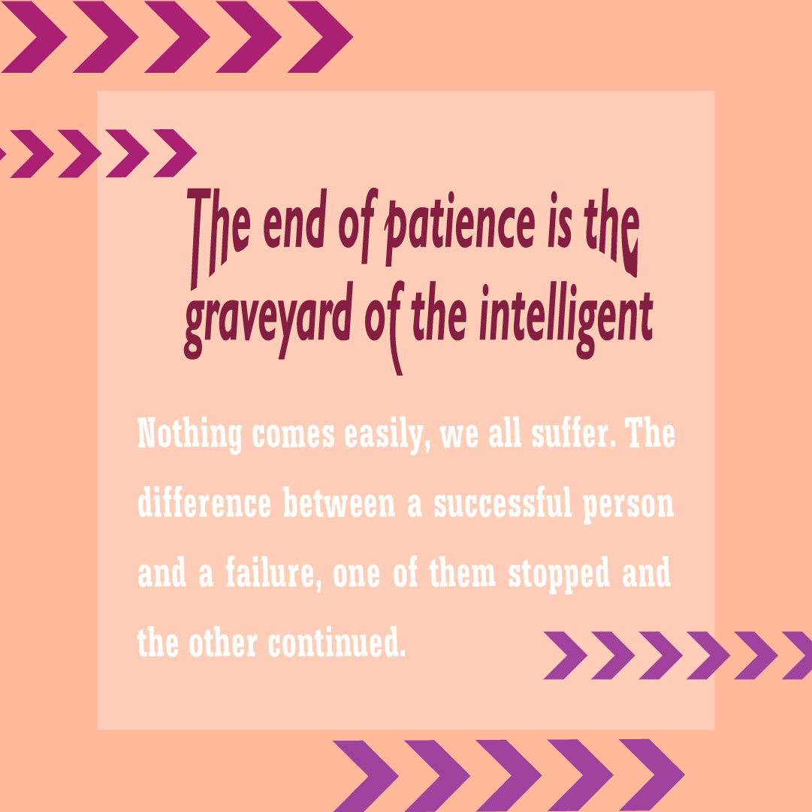
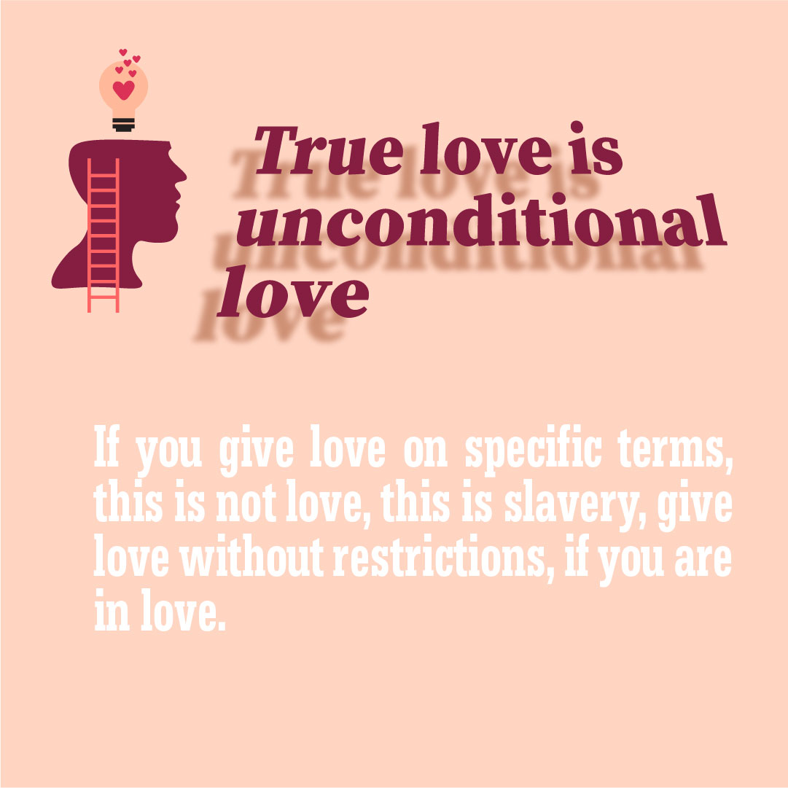

A study of layout, type, color, and visual hierarchy, showing how I translate a creative brief into a finished identity system.
The client needed a brand identity that felt warm and trustworthy but also distinct enough to compete in a crowded market. Their existing visuals were inconsistent, the typography was generic, and color choices shifted across platforms.
I built a small design system, a refined logomark, a paired type system (serif headline + sans body), a calm color palette, and a consistent layout grid. Every deliverable was checked against the system so the brand reads the same in print, web, and social.
Brief, audience, references, mood
Type, color, grid, voice
Iteration, refinement, review
Final assets, brand kit, guidelines

Early concept direction focused on color and shape relationships.

Pairing a refined serif headline with a clean, modern sans body.
A grounded palette built around warmth, contrast, and accessibility.
The system applied across print, social, and web touchpoints.
A cohesive brand that reads consistently across every surface, clearer decisions for the client, faster reviews, and a system that scales as the business grows.